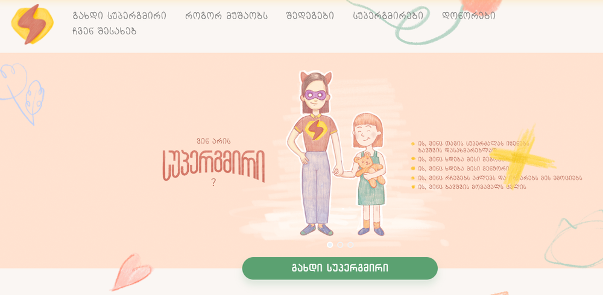

აღმოჩნდა, რომ ცხოვრებაში ბევრად უფრო მეტ სუპერგმირს შეიძლება შევხვდეთ, ვიდრე კომიქსებსა და ფილმებში. აღმოჩნდა, რომ სუპერგმირები ჩვენს შორის ცხოვრობენ, შეიძლება ვიცნობთ კიდეც, მეტიც, შეიძლება თქვენ, ვინც ახლა ამას კითხულობთ, თავად აღმოჩნდეთ სუპერგმირი!
პირველ ივნისს, ბავშვთა დაცვის დღეს, ახალი სუპერ რეალური სამყარო შეიქმნა. საქველმოქმედო პლატფორმა ge">supergmiri.ge ადამიანებს საშუალებას აძლევს ჩაერთონ პირდაპირ ქველმოქმედებაში და დაეხმარონ ბავშვებს, რომლებსაც სუპერგმირების არსებობა ყველაზე მეტად სჭირდებათ.

პროექტის მიზანია ყველას გააგებინოს ბავშვების ხმა, რომელიც სამწუხაროდ ხშირად ჩვენამდე არ მოდის, და რეალური და ხანგრძლივი გავლენა იქონიოს მათი ცხოვრების გაუმჯობესებაზე. სწორედ ამისთვის ვებ პლატფორმაზე მომავალი სუპერგმირები შეძლებენ გაიცნონ და გაიგონ ბავშვების ისტორიები. ბავშვების, რომლებსაც მთელი საქართველოს მასშტაბით ვეძებთ, რომლებიც ხელმომჭირნე ოჯახებიდან არიან, რომლებსაც მეგობარი და მენტორი სჭირდებათ, და რომლებიც უბრალოდ სუპერგმირებს ელოდებიან.
სუპერგმირების ყურადღების მისაქცევად ყველაზე სუპერგმირული გზა შევარჩიეთ. ქალაქის სხვადასხვა ადგილას მინათებული ჩვენი სიმბოლოს გამოყენებით, კლასიკური ბეტ-სიგნალის მსგავსად, სუპერგმირებს გადავეცით მთავარი მესიჯი, რომ მათი დახმარება სასწრაფოდ გვჭირდება. ამ გზით შევეცადეთ მოვიხმოთ მომავალი გმირები და მოვუწოდოთ მათი ახალი მისიის შესრულებისკენ.
თუ თქვენ როდესმე გიოცნებიათ სუპერგმირობაზე, სუპერძალაზე, რომლითაც სხვას დაეხმარებით, შეგიძლიათ მარტივად გახდეთ ბავშვისთვის ის ადამიანი, ვინც მისი ცხოვრება უკეთესობისკენ შეცვალა და თავისი სუპერძალა სიკეთეს მოახმარა.
ამისთვის ვებგვერდზე დარეგისტრირების შემდეგ, მომავალი სუპერგმირი თავად ირჩევს ბავშვს, რომელსაც ხანგრძლივად და სისტემატურად დაეხმარება, როგორც ყოველთვიურად მატერიალური მხარდაჭერით, თუ საჩუქრებით, ასევე გახდება მისი მეგობარი, რჩევებს მისცემს, ემოციებს გაიზიარებს და ცხოვრებას გაუფერადებს. სუპერგმირმა შეიძლება დასახმარებლად თავის მეგობრებსაც მოუხმოს და ერთად შეკრან სუპერგმირთა არმია, რომელიც გაერთიანებული ძალებით იზრუნებს ბავშვის მომავალზე.
პლატფორმა ითვალისწინებს ყოველთვიური სპონსორობის 100 ლარიან პაკეტს, რომელშიც გაერთიანებულია ბავშვის ასაკის შესაბამისი საჭიროების პროდუქტები. სუპერგმირს საშუალება ეძლევა დაამყაროს ინდივიდუალური ურთიერთობა ბავშვთან, გაცვალოს მასთან წერილები, ნივთები და გარკვეული პერიოდულობით შეხვდეს კიდევაც მას. ყოველთვიური დონაციის სრული თანხა პირდაპირ ბავშვებთან მიდის და მხოლოდ მათ ხმარდება, ყველა გზავნილი გამჭირვალეა და ყოველთვიურად სუპერგმირები იღებენ შესაბამის ონლაინ რეპორტს.
დაფიქრდით, ეგებ თქვენც აღმოგაჩნდეთ სუპერგმირობისთვის საჭირო სუპერძალა, ესტუმრეთ www.supergmiri.ge-ს სამყაროს და შეცვალეთ ბავშვების მომავალი.